Antes de saber que eras tú
Creí que el lugar correcto para contar nuestra historia era un libro...
Hasta que recordé que nuestra historia sigue escribiéndose todos los días.
El capítulo que el papel nunca pudo contener.
Hay historias que comienzan mucho antes
de que dos personas sepan que se están buscando.
Esta es la nuestra.
❤️
Capítulo II
No todos los recuerdos necesitan una fecha,
porque algunos simplemente se quedan viviendo en el corazón.
Aquí estarán nuestras fotografías,
nuestros momentos y todo aquello que nos recuerda
por qué seguimos eligiéndonos.


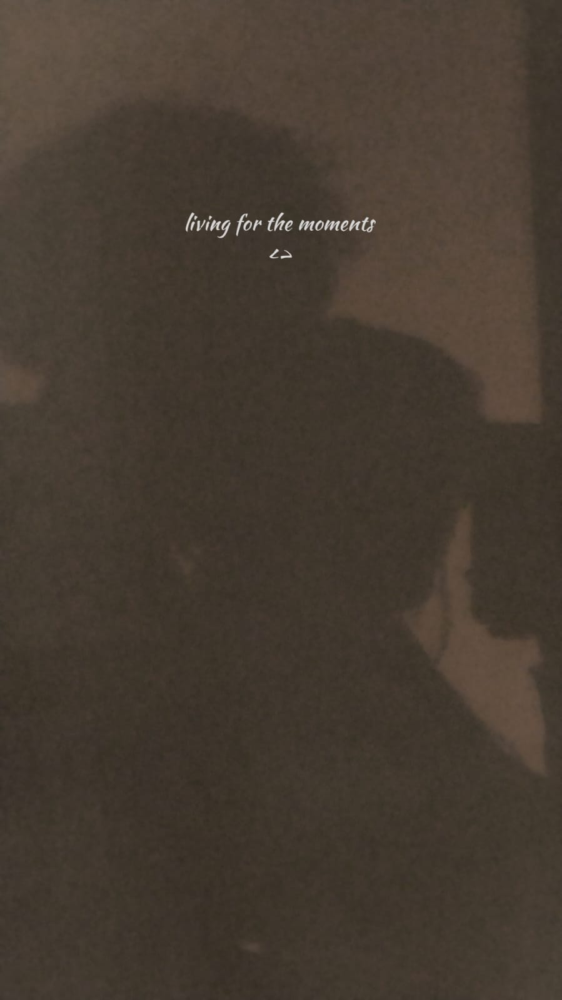
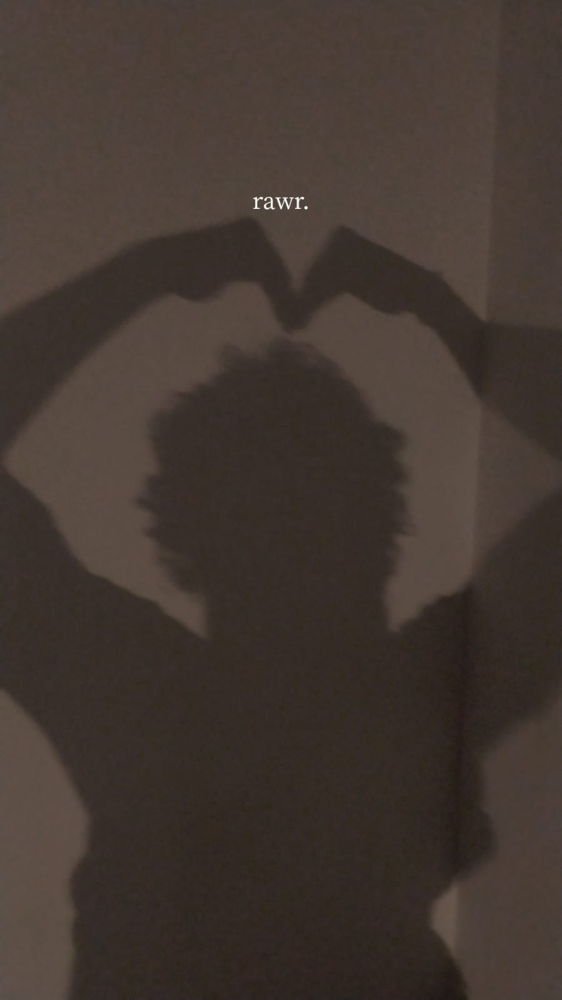
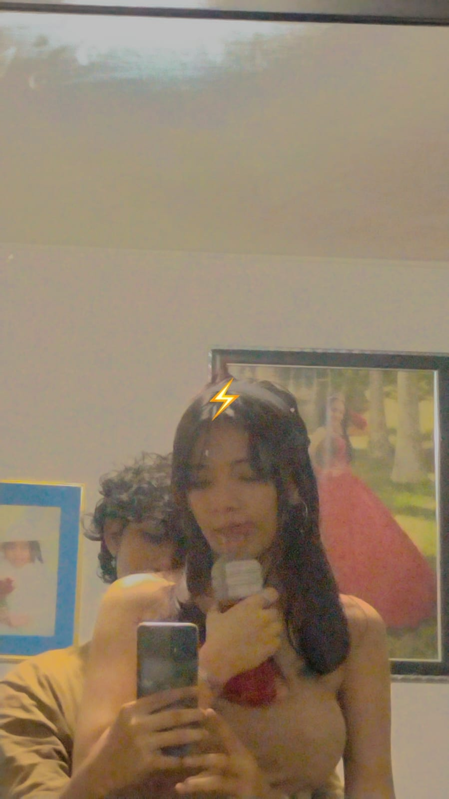
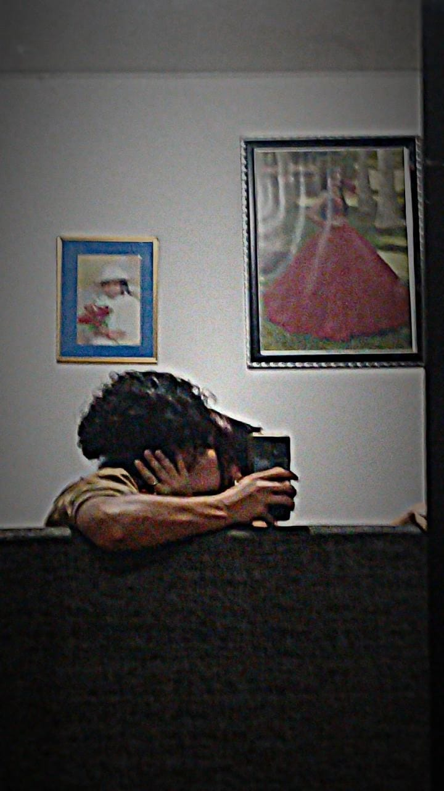
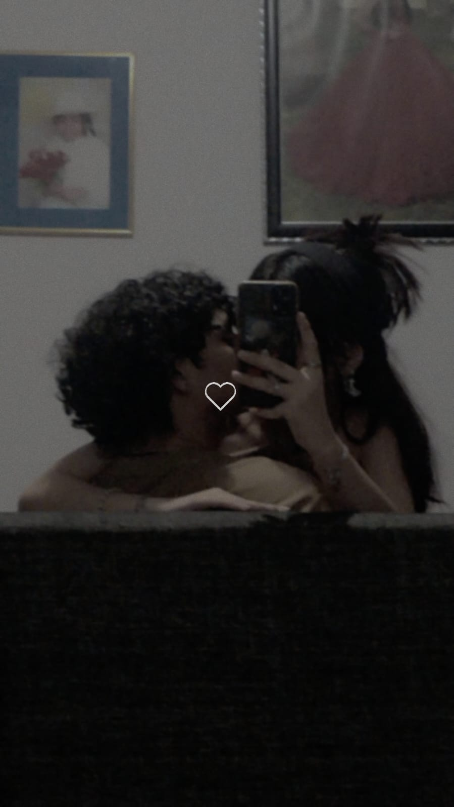
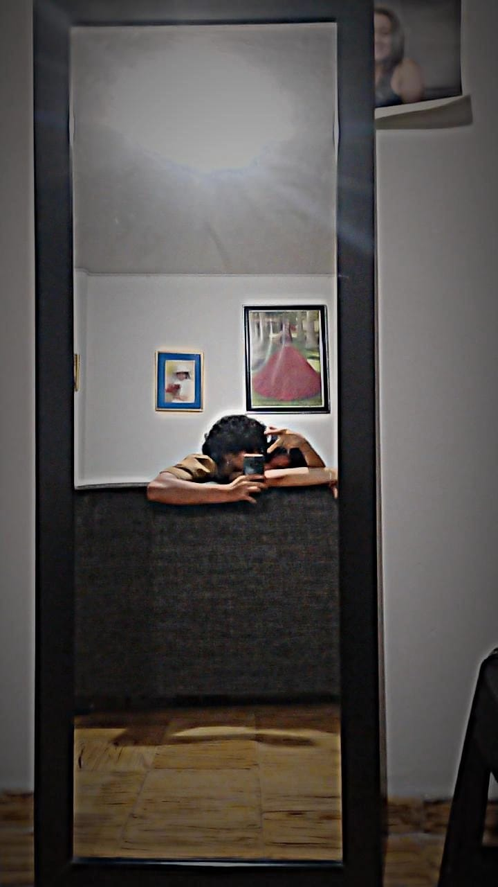
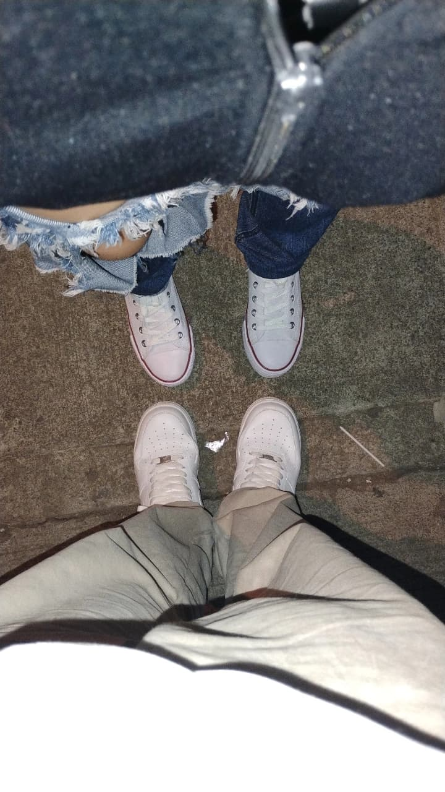
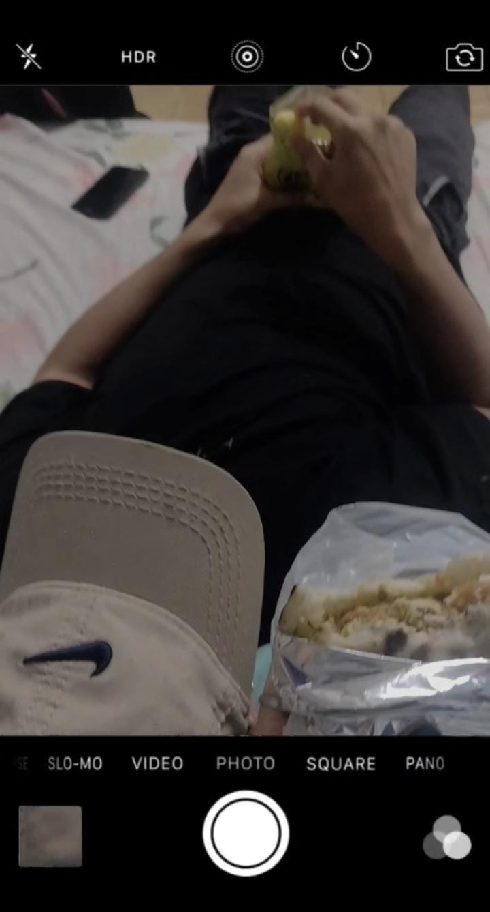
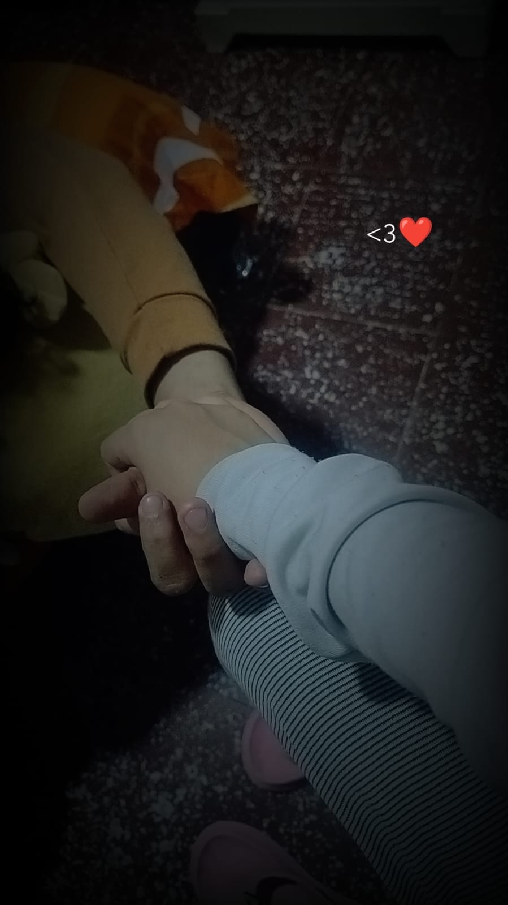
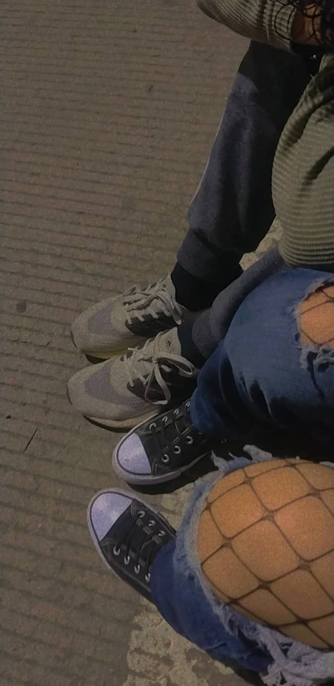
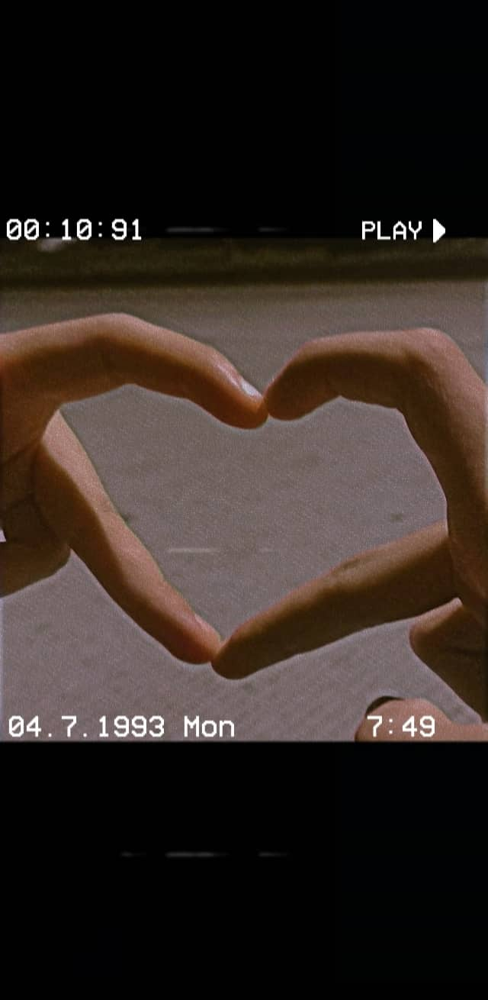
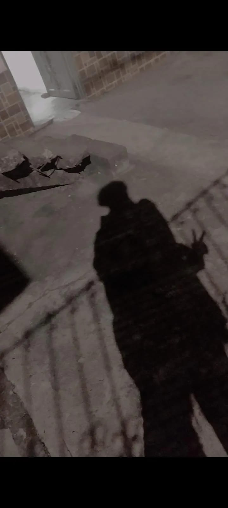